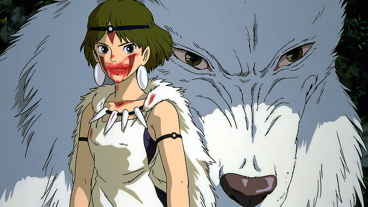
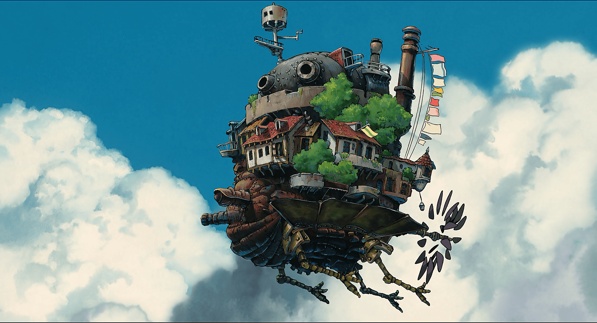
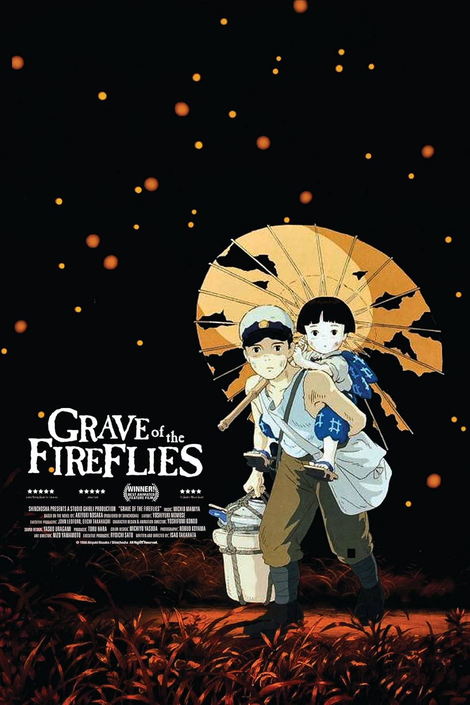
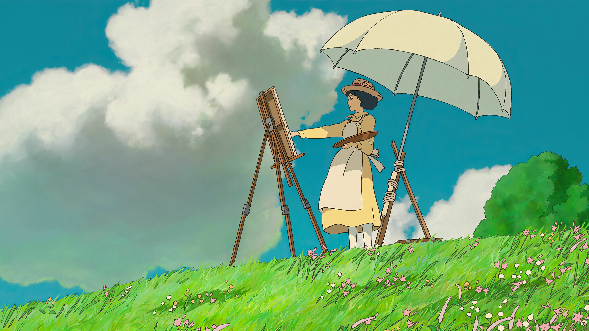
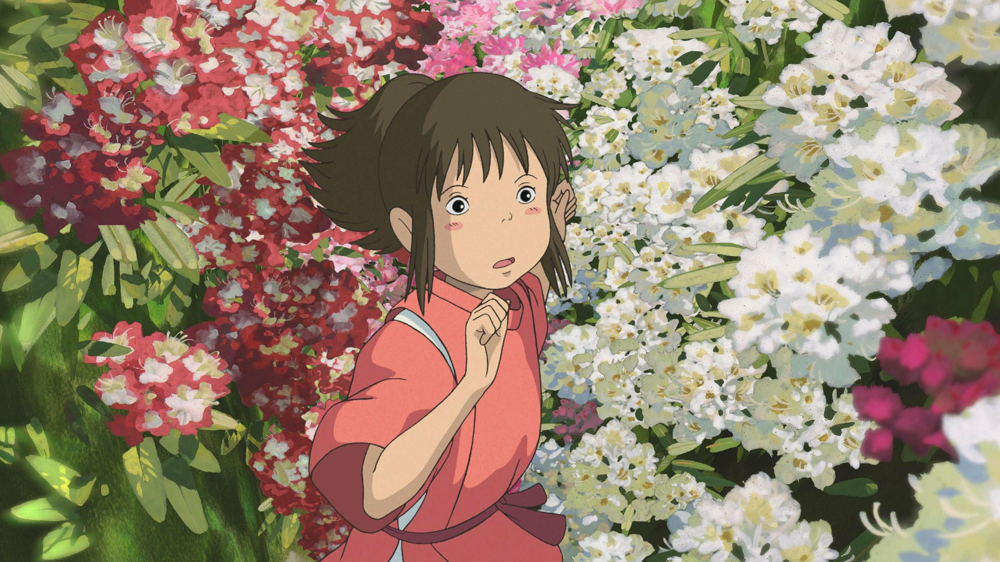

Howl's Moving Castle
A girl is cursed into old age and finds magic, mystery, and love inside a wizard’s wandering home.

Grave of the Firflies
In war-torn Japan, two siblings fight to survive. A heart-wrenching story of love, loss, and innocence destroyed by conflict. Based on true events, it captures the quiet tragedy of war through haunting, unforgettable moments.

Wind Rises
A dreamer chases the sky.
